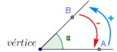
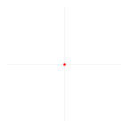
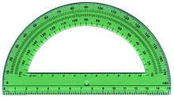
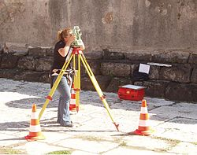

Ángulo.
Si una mesa tiene esquinas, los lados de la mesa formarán un ángulo.
| Un ángulo es la región del plano comprendida entre dos semirrectas con origen común. |
El ángulo es positivo si se desplaza en sentido contrario al movimiento de las agujas del reloj y negativo en caso contrario.

Radián.
|
En el Sistema Internacional la unidad de medida es el radián. Un radián es el ángulo que limita un arco de circunferencia cuya longitud es igual al radio de la circunferencia. |
La siguiente animación te permitirá hacerte una idea intuitiva de qué es un radián.

El radián es una unidad sumamente útil para medir ángulos, puesto que simplifica los cálculos, ya que los más comunes se expresan mediante sencillos múltiplos o divisores de π.
Observa.
Otras unidades de medida.
Los ángulos, al igual que hacíamos con el tiempo, se pueden medir en el sistema sexagesimal ya que, aunque sus unidades no pertenezcan al SI, sí están autorizadas.
Grado sexagesimal (º) es la amplitud del ángulo resultante de dividir la circunferencia en 360 partes iguales. Cada grado se divide en 60 minutos (´) y, cada minuto, en 60 segundos (´´).
- Si queremos pasar de radianes a grados: \[\boxed{\\ \quad \textrm{grados}=\dfrac{180}{\pi}\textrm{radianes}\quad \\}\]
- Si queremos pasar de grados a radianes:\[\boxed{\\ \quad \textrm{radianes}=\dfrac{\pi}{180}\textrm{grados}\quad \\ }\]
Cambio entre unidades.
En la siguiente lista de reproducción te ofrecemos 4 vídeos en los que se practica el cambio de grados a radianes y viceversa:
Ejercicio resuelto.
Usando las fórmulas anteriores, averigua a cuántos grado equivale un radián. Expresa el resultado en grados, minutos y segundos.
Instrumentos para medir ángulos.
El transportador de ángulos o goniómetro es un semicírculo dividido en 180 partes iguales. Cada una de ellas es un grado (º). Las unidades que se usan para medir ángulos más pequeños que el grado son el minuto (1´) y el segundo (1´´). Sus equivalencias son 1º=60´ y 1´=60´´. El minuto y el segundo son unidades muy pequeñas que a simple vista no se aprecian. Para medirlas se utiliza el teodolito, un instrumento de mucha precisión.
 |
 |
Configura tu calculadora.
Todas las calculadoras científicas nos permiten trabajar con grados sexagesimales (modo deg) o con radianes (modo rad). En el siguiente tutorial viene explicado cómo hacerlo: